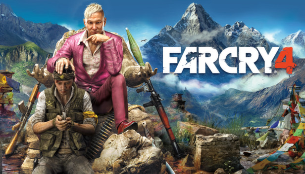

Kedvenc játékok weboldala
Multi Theft Auto: San Andreas
Nagyon szeretem ezt a játékot már nagyjából 6 éve játszok vele, ezen belűl is a SeeMTA v3, illetve a SeeMTA v3 - Las Venturas szerverén szoktunk játszani haverokkal.
Grand Theft Auto V
Ezt a játékot szintén imádom, haverokkal nagyon sokat szoktunk hülyéskedni GTA Online-ban, aki szeret kocsikat tuningolni, lövöldözni, küldetéseket végig vinni, annak ajánlani tudom.
Far Cry 3
Ha lövöldözős játék akkor a Far Cry 3 az a játék amit nagyon szeretek, hogy miért? Azért mert nagyon jó a játéknak az alap története. Eddig nagyjából 5x játszottam végig a játékot.
Far Cry 4
Ha már Far Cry akkor nem maradhat ki a Far Cry 4 ezt a játékot is imádom, bár még nem jutattam el oda hogy végig játszam de ezt is imádom a története miatt.

Far Cry 5
A legújabb játék a Far Cry játékok között, ez is egy jó játék a története nagyon jó, bár nem egyszerű végigjátszani.

Outlast
Horror játék téren, szerintem nagyon jó játék az Outlast, igaz durva a története a játéknak, de horror játékhoz illő és nagyon jó. Aki szereti egy kicsit is a horrort annak csak ajánlani tudom a játékot.

Outlast 2
Ha már Outlast akkor az Outlast 2 is nagyon jó játék, szintén egy durva storyval, sokkal hosszabb a játék, de imádom.